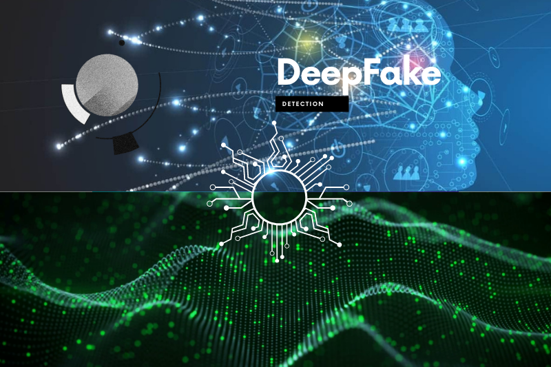
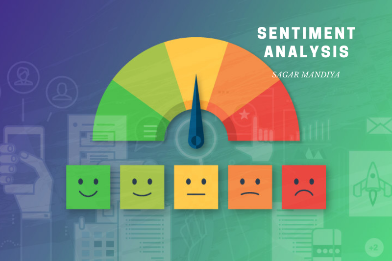

SAGAR MANDIYA
Toggle navigation
Home
About Me
Projects
Blog
Profile
Skills & Certifications
CV
Connect
Recent Projects

DeepFake Detection
A Deep Learning based model capable of detecting computer generated fake images and videos from the real ones. Thus can help with the widespread of misleading information currently occupying a considerable chunk of online media.
Movie Recommendation System
A Deep Learning based model capable of recommending movies with the help of various factors like IMDB rating, Genre, etc.

Sentiment Analysis
A Deep Learning (Bi-directional LSTM) based model capable of detecting sentiments, from the public movie reviews posted on the IMDB.
Face Recognition
A Deep Learning based model capable of recognizing faces, which are already in the database. Thus can be used for Home security camera.
Sarcasm Detection in News Headlines
A Natural Language Processing (Bi-directional LSTM) based model capable of detecting human emotions from the text.
Wine Quality Analysis
A Machine learning model based on Regression algorithm, trained to predict the quality of wine with the help of several holistic features.
WANNA SEE MORE?